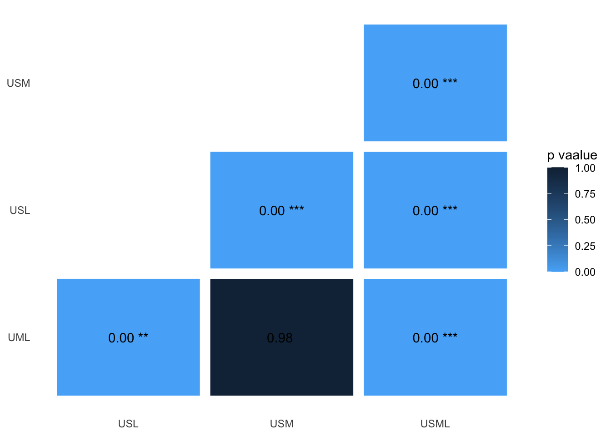
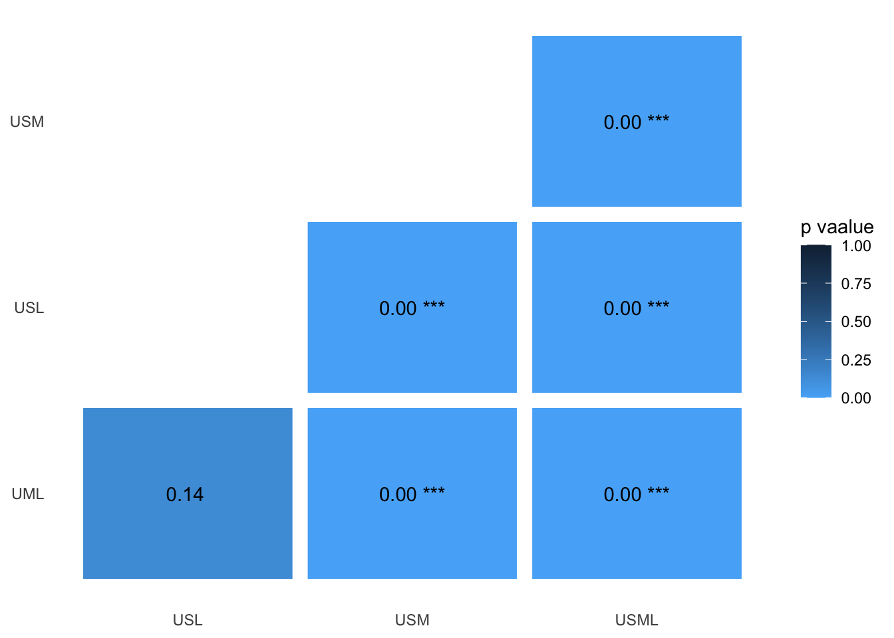

Opsin-shifted LWS photoreceptors: Visual models using opsin-shifted LWS receptors instead of filter-shifted LWS receptors in Main models
Supplementary Information
The aim
We tested how the LWS photoreceptors generated (opsin-shifted vs. filter-shifted) using different methods affect the contrasts.
In the following sections, we ran the same models as in the Main models but using the opsin-shifted LWS receptors for comparison.
The model parameters and the statistical methods remain the same as described in the Main models.
#Load R libraries
library(pavo)
library(dplyr)
library(stringr)
library(tidyr) #for gather() function
library(ggplot2)
library(lme4)
library(car)
library(multcomp)
library(boot) #for mean() function
library(pander) #for creating tidy tables
library(ggpubr) #for ggarrange() function
Data description
- We used the same spectral data and illumination as the Main models.
Sensitivity curves
ALL photoreceptor sensitivities (UVS, SWS, MWS, LWS) were generated from the Govardovskii template without apply filters.
Note: UVS, SWS, MWS photoreceptors were the same as those in the main models
#import sensitivity curves
specsensbuprest.aim1 <- read.csv("data/peak sensitivity_opsin shift_aim1.csv",header = TRUE) %>%
as.rspec()
specsensbuprest.aim2 <- read.csv("data/peak sensitivity_opsin shift_aim2.csv",header = TRUE) %>%
as.rspec()
# import irradiance
irradiance.d65 <- read.csv("data/d65.csv", header = TRUE) %>%
as.rspec(lim = c(300,800)) %>% #set import range
procspec(opt = c("min", "max")) #standardize the illumination spectrum
irradiance.twilight <- read.csv("data/civil twilight.csv", header = TRUE) %>%
as.rspec(lim = c(300,800)) %>%
rename( twilight = Irradiance) %>%
irrad2flux() #convert the irradiance (μ Watt.cm^{-2}) to photon flux (μ mol.s^{-1}.m^{-2}) to derive correct quantum catch.
#import background - average leaf
aveleaf <- read.csv("data/aveleaf.csv",header=TRUE) %>%
as.rspec()
#import and combine beetle, flower, leaf together
raw.dataset <- read.csv("data/refelectance spectra.csv",header=TRUE) %>%
as.rspec()
dataset <- aggspec(raw.dataset, by = 3, FUN = mean) %>% #average three measurements to a representative one
procspec(opt = "smooth", span = 0.1, fixneg = "zero") #smooth the spectra and lift <0 to 0Sensitivity curves
wl <- specsensbuprest.aim2[,1]
peaks <- gather(specsensbuprest.aim2[,2:9], peak, value) %>%
cbind(wl)
#order the peaks in the legend
wl <- specsensbuprest.aim2[,1]
peaks<-gather(specsensbuprest.aim2[,2:9], peak, value) %>% cbind(wl)
peak.order <- c("UVS.355.A1.", "SWS.445.A1.", "MWS.530.A1.", "LWS.580.A1.", "LWS.600.A1.", "LWS.620.A1.", "LWS.640.A1.", "LWS.660.A1.") #to order the peaks in the legend
ggplot(peaks,
aes(x = wl, y = value, col = peak))+
geom_line()+
guides(color = guide_legend(title = "peak sensitivity"))+
scale_color_manual(
values = c("darkorchid4", "dodgerblue3", "olivedrab4", "orange1", "orange3","darkorange3", "orangered1", "red2"),
labels = c("355 nm", "445 nm","530 nm", "580 nm", "600 nm", "620 nm", "640 nm", "660 nm"),
breaks = peak.order)+
xlab("Wavelength (nm)")+
ylab("Relative spectral sensitivity")+
theme_classic()
Figure caption: Sensitivity curves of the photoreceptors with different peak wavelengths.
Normalised sensitivity curves
vis.list.norm <- list(specsensbuprest.aim2[, 1:2], specsensbuprest.aim2[, c(1, 3)],
specsensbuprest.aim2[, c(1, 4)], specsensbuprest.aim2[, c(1, 5)],
specsensbuprest.aim2[, c(1, 6)], specsensbuprest.aim2[, c(1, 7)],
specsensbuprest.aim2[, c(1, 8)], specsensbuprest.aim2[, c(1, 9)])
hold.normvis <- tibble("355 nm" = NA, "445 nm" = NA, "530 nm" = NA, "580 nm" = NA,
"600 nm" = NA, "620 nm" = NA, "640 nm" = NA, "660 nm" = NA,
wl = specsensbuprest.aim2[,1])
for(i in 1:length(vis.list.norm)){
temp <- vis.list.norm[[i]] %>% procspec(opt = c("min", "max"))
hold.normvis[[i]] <- temp[, 2]
}
plotdat.normvis <- gather(hold.normvis[,1:8], peak, value) %>% cbind(hold.normvis[,"wl"])
ggplot(plotdat.normvis, aes(x = wl, y = value, color = peak))+
geom_line()+
guides(color = guide_legend(title = "peak sensitivity"))+
scale_color_manual(
values = c("darkorchid4", "dodgerblue3", "olivedrab4", "orange1", "orange3","darkorange3", "orangered1", "red2"))+
xlab("Wavelength (nm)")+
ylab("Relative spectral sensitivity")+
theme_classic()Figure caption: Normalised sensitivity curves of the photoreceptors with different peak wavelengths.
Run the visual models
We ran the visual models with the same parameter settings and steps as in the Main models.
We first calculated the quantum catches, then calculated the contrasts.
## D65
get.d65.vismodel <- function(i){
vs.i <- vismodel(dataset[1:501,],
visual = i, #this need to change according to the visual system
bkg = aveleaf$aveleaf,
illum = irradiance.d65[1:501,2],
qcatch = 'fi',
relative = FALSE,
vonkries = TRUE)
return(vs.i)
}
## Twilight
get.twilight.vismodel <- function(i){
vs.i <- vismodel(dataset[1:501,],
visual = i,
bkg = aveleaf$aveleaf,
illum = irradiance.twilight[1:501,2],
qcatch = 'fi',
relative = FALSE,
vonkries = TRUE)
return(vs.i)
}# set up sensitivity list for Aim 1 and Aim 2
sens.list <- list(USM <- specsensbuprest.aim1[, 1:4],
UML <- specsensbuprest.aim1[, c(1,2,4,5)],
USL <- specsensbuprest.aim1[, c(1,2,3,5)],
USML <- specsensbuprest.aim1[, 1:5],
VS580 <- specsensbuprest.aim2[, 1:5],
VS600 <- specsensbuprest.aim2[, c(1,2,3,4,6)],
VS620 <- specsensbuprest.aim2[, c(1,2,3,4,7)],
VS640 <- specsensbuprest.aim2[, c(1,2,3,4,8)],
VS660 <- specsensbuprest.aim2[, c(1,2,3,4,9)])
# Quantum catch - D65 - Aim 1 & Aim 2
## set up list for holding output
d65.vismodel.output <- list(USM = NA, UML = NA, USL = NA, USML = NA,
VS580 = NA, VS600 = NA, VS620 = NA, VS640 = NA, VS660 = NA)
twilight.vismodel.output <- d65.vismodel.output # replicate a same empty list for twilight
## Run the loop
for (i in 1:length(sens.list)){
vs.result.d65 <- get.d65.vismodel(sens.list[[i]]) # for D65
d65.vismodel.output[[i]] <- vs.result.d65
vs.result.twilight <- get.twilight.vismodel(sens.list[[i]]) # for twilight
twilight.vismodel.output[[i]] <- vs.result.twilight
}
## D65 Aim 1 & Aim 2 vismodel output
vsUSM <- d65.vismodel.output$USM
vsUML <- d65.vismodel.output$UML
vsUSL <- d65.vismodel.output$USL
vsUSML <- d65.vismodel.output$USML
buprest580 <- d65.vismodel.output$VS580
buprest600 <- d65.vismodel.output$VS600
buprest620 <- d65.vismodel.output$VS620
buprest640 <- d65.vismodel.output$VS640
buprest660 <- d65.vismodel.output$VS660
## Twilight Aim 1 & Aim 2 vismodel output
vsUSM_twilight <- twilight.vismodel.output$USM
vsUML_twilight <- twilight.vismodel.output$UML
vsUSL_twilight <- twilight.vismodel.output$USL
vsUSML_twilight <- twilight.vismodel.output$USML
buprest580_twilight <- twilight.vismodel.output$VS580
buprest600_twilight <- twilight.vismodel.output$VS600
buprest620_twilight <- twilight.vismodel.output$VS620
buprest640_twilight <- twilight.vismodel.output$VS640
buprest660_twilight <- twilight.vismodel.output$VS660# set up common list before running loop for calculating contrast
## receptor density
aim1.recep.density.list <- list(USM <- c(1.6027, 1.4059, 1.7714),
UML <- c(1.4416, 1.5933, 1.7451),
USL <- c(1.5481, 1.3580, 1.8740),
USML <- c(1.14, 1, 1.26, 1.38))
## Weber fraction
aim1.web.list <- c(0.1059, 0.1067, 0.1030, 0.12)
aim1.web.ref <- c(3, 3, 3, 4)
# Contrast calculation- D65 - aim 1
## create model data list
aim1.d65.vismodel.list <- list(vsUSM, vsUML, vsUSL, vsUSML)
## combine list before running the loop
aim1.d65.comb.list <- list(vis.list = aim1.d65.vismodel.list,
recp.dens.list = aim1.recep.density.list,
web.list = aim1.web.list,
web.ref = aim1.web.ref)
# list for holding output
aim1.d65.contrast.output <- list(USM = NA, UML = NA, USL = NA, USML = NA)
for (i in 1:length(aim1.d65.comb.list)) {
coldist.result <- coldist(modeldata = aim1.d65.comb.list$vis.list[[i]], # change input model data
noise = "neural",
achro = FALSE,
n = aim1.d65.comb.list$recp.dens.list[[i]] , # change receptor density
weber = aim1.d65.comb.list$web.list[[i]], # change weber's fraction
weber.ref = aim1.d65.comb.list$web.ref[[i]] )
aim1.d65.contrast.output[[i]] <- coldist.result
}
CvsUSM <- aim1.d65.contrast.output$USM
CvsUML <- aim1.d65.contrast.output$UML
CvsUSL <- aim1.d65.contrast.output$USL
CvsUSML <- aim1.d65.contrast.output$USML
#Contrast calculation- D65 - Aim 2
get.aim2.d65.coldist <- function(i){
con <- coldist(modeldata = i, # put output of vismodel()
noise = "neural",
achro = FALSE,
n = c(1.14, 1, 1.26, 1.38),
weber = 0.12,
weber.ref = 4)
return(con)
}
aim2.d65.contrast.output <- list(VS580 = NA, VS600 = NA, VS620 = NA, VS640 = NA, VS660 = NA)
aim2.d65.vismodel.list <- list(buprest580,
buprest600,
buprest620,
buprest640,
buprest660)
for (i in 1:length(aim2.d65.vismodel.list)) {
contrast.result.i <- get.aim2.d65.coldist(aim2.d65.vismodel.list[[i]])
aim2.d65.contrast.output[[i]] <- contrast.result.i
}
Cbuprest580 <- aim2.d65.contrast.output$VS580
Cbuprest600 <- aim2.d65.contrast.output$VS600
Cbuprest620 <- aim2.d65.contrast.output$VS620
Cbuprest640 <- aim2.d65.contrast.output$VS640
Cbuprest660 <- aim2.d65.contrast.output$VS660
#Contrast calculation- twilight - aim 1
aim1.twilight.vismodel.list <- list(vsUSM_twilight,
vsUML_twilight,
vsUSL_twilight,
vsUSML_twilight)
# Here have to create one comb.list is becasue vis.model input is different from D65
aim1.twilight.comb.list <- list(vis.list = aim1.twilight.vismodel.list,
recp.dens.list = aim1.recep.density.list,
web.list = aim1.web.list,
web.ref = aim1.web.ref)
# list for holding output
aim1.twilight.contrast.output <- list(USM = NA, UML = NA, USL = NA, USML = NA)
for (i in 1:length(aim1.twilight.comb.list)) {
coldist.result <- coldist(modeldata = aim1.twilight.comb.list$vis.list[[i]], # change input model data
noise = "quantum",
achro = FALSE,
n = aim1.twilight.comb.list$recp.dens.list[[i]] , # change receptor density ratio
weber = aim1.twilight.comb.list$web.list[[i]], # change weber's fraction
weber.ref = aim1.twilight.comb.list$web.ref[[i]])
aim1.twilight.contrast.output[[i]] <- coldist.result
}
CvsUSM_twilight <- aim1.twilight.contrast.output$USM
CvsUML_twilight <- aim1.twilight.contrast.output$UML
CvsUSL_twilight <- aim1.twilight.contrast.output$USL
CvsUSML_twilight <- aim1.twilight.contrast.output$USML
#Contrast calculation- twilight - Aim 2
get.aim2.twilight.coldist <- function(i){
con <- coldist(modeldata = i,
noise="quantum",
achro=FALSE,
n = c(1.14,1,1.26,1.38),
weber = 0.12,
weber.ref = 4)
return(con)
}
aim2.twilight.contrast.output <- list(VS580 = NA, VS600 = NA, VS620 = NA, VS640 = NA, VS660 = NA)
aim2.twilight.vismodel.list <- list(buprest580_twilight,
buprest600_twilight,
buprest620_twilight,
buprest640_twilight,
buprest660_twilight)
for (i in 1:length(aim2.twilight.vismodel.list)) {
contrast.result.i <- get.aim2.twilight.coldist(aim2.twilight.vismodel.list[[i]])
aim2.twilight.contrast.output[[i]] <- contrast.result.i
}
Cbuprest580_twilight <- aim2.twilight.contrast.output$VS580
Cbuprest600_twilight <- aim2.twilight.contrast.output$VS600
Cbuprest620_twilight <- aim2.twilight.contrast.output$VS620
Cbuprest640_twilight <- aim2.twilight.contrast.output$VS640
Cbuprest660_twilight <- aim2.twilight.contrast.output$VS660# Get a column for visual system names
## Create list required in the loops
aim1.fl.vissys <- list("UVSWMW...fl",
"UV..MWLW.fl",
"UVSW..LW.fl",
"UVSWMWLW.fl")
aim1.bl.vissys <- list("UVSWMW...bl",
"UV..MWLW.bl",
"UVSW..LW.bl",
"UVSWMWLW.bl")
aim1.bf.vissys <- list("UVSWMW...bf",
"UV..MWLW.bf",
"UVSW..LW.bf",
"UVSWMWLW.bf")
aim2.fl.vissys <- list("VS580.fl", "VS600.fl", "VS620.fl", "VS640.fl", "VS660.fl")
aim2.bl.vissys <- list("VS580.bl", "VS600.bl", "VS620.bl", "VS640.bl", "VS660.bl")
aim2.bf.vissys <- list("VS580.bf", "VS600.bf", "VS620.bf", "VS640.bf", "VS660.bf")
## Daylight - aim 1
aim1.vissys_d65 <- list(CvsUSM, CvsUML, CvsUSL, CvsUSML)
### flower vs leaf
allvis.fl_d65.aim1 <- data_frame()
for (i in 1:length(aim1.vissys_d65)) {
temp.i <- aim1.vissys_d65[[i]] %>%
filter(str_detect(patch1,"flower")) %>%
filter(str_detect(patch2,"leaves")) %>%
dplyr::select(1:3)
temp.i$vissys <- strrep(aim1.fl.vissys[[i]],1)
allvis.fl_d65.aim1 <- temp.i %>% rbind(allvis.fl_d65.aim1)
}
### beetle vs leaf
allvis.bl_d65.aim1 <- data_frame()
for (i in 1:length(aim1.vissys_d65)) {
temp.i <- aim1.vissys_d65[[i]] %>%
filter(str_detect(patch2,"beetle")) %>%
# Note: for beelte vs. leaf, have to filter from patch 2 then pactch 1
filter(str_detect(patch1,"leaves")) %>%
dplyr::select(1:3)
temp.i$vissys <- strrep(aim1.bl.vissys[[i]],1)
allvis.bl_d65.aim1 <- temp.i %>% rbind(allvis.bl_d65.aim1)
}
### beetle vs flower
allvis.bf_d65.aim1 <- data_frame()
for (i in 1:length(aim1.vissys_d65)) {
temp.i <- aim1.vissys_d65[[i]] %>%
filter(str_detect(patch1,"flower")) %>%
filter(str_detect(patch2,"beetle")) %>%
dplyr::select(1:3)
temp.i$vissys <- strrep(aim1.bf.vissys[[i]],1)
allvis.bf_d65.aim1 <- temp.i %>% rbind(allvis.bf_d65.aim1)
}
## Twilight - aim 1
aim1.vissys_twilight <- list(CvsUSM_twilight, CvsUML_twilight, CvsUSL_twilight, CvsUSML_twilight)
### flower vs leaf
allvis.fl_twilight.aim1 <- data_frame()
for (i in 1:length(aim1.vissys_twilight)) {
temp.i <- aim1.vissys_twilight[[i]] %>%
filter(str_detect(patch1,"flower")) %>%
filter(str_detect(patch2,"leaves")) %>%
dplyr::select(1:3)
temp.i$vissys <- strrep(aim1.fl.vissys[[i]],1)
allvis.fl_twilight.aim1 <- temp.i %>% rbind(allvis.fl_twilight.aim1)
}
### beetle vs leaf
allvis.bl_twilight.aim1 <- data_frame()
for (i in 1:length(aim1.vissys_twilight)) {
temp.i <- aim1.vissys_twilight[[i]] %>%
filter(str_detect(patch2,"beetle")) %>%
filter(str_detect(patch1,"leaves")) %>%
dplyr::select(1:3)
temp.i$vissys <- strrep(aim1.bl.vissys[[i]],1)
allvis.bl_twilight.aim1 <- temp.i %>% rbind(allvis.bl_twilight.aim1)
}
### beetle vs flower
allvis.bf_twilight.aim1 <- data_frame()
for (i in 1:length(aim1.vissys_twilight)) {
temp.i <- aim1.vissys_twilight[[i]] %>%
filter(str_detect(patch1,"flower")) %>%
filter(str_detect(patch2,"beetle")) %>%
dplyr::select(1:3)
temp.i$vissys <- strrep(aim1.bf.vissys[[i]],1)
allvis.bf_twilight.aim1 <- temp.i %>% rbind(allvis.bf_twilight.aim1)
}
## Daylight - aim 2
aim2.vissys_d65 <- list(Cbuprest580, Cbuprest600, Cbuprest620, Cbuprest640, Cbuprest660)
### flower vs leaf
allvis.fl_d65.aim2 <- data_frame()
for (i in 1:length(aim2.vissys_d65)) {
temp.i <- aim2.vissys_d65[[i]] %>%
filter(str_detect(patch1,"flower")) %>%
filter(str_detect(patch2,"leaves")) %>%
dplyr::select(1:3)
temp.i$vissys <- strrep(aim2.fl.vissys[[i]],1)
allvis.fl_d65.aim2 <- temp.i %>% rbind(allvis.fl_d65.aim2)
}
### beetle vs leaf
allvis.bl_d65.aim2 <- data_frame()
for (i in 1:length(aim2.vissys_d65)) {
temp.i <- aim2.vissys_d65[[i]] %>%
filter(str_detect(patch2,"beetle")) %>%
filter(str_detect(patch1,"leaves")) %>%
dplyr::select(1:3)
temp.i$vissys <- strrep(aim2.bl.vissys[[i]],1)
allvis.bl_d65.aim2 <- temp.i %>% rbind(allvis.bl_d65.aim2)
}
### beetle vs flower
allvis.bf_d65.aim2 <- data_frame()
for (i in 1:length(aim2.vissys_d65)) {
temp.i <- aim2.vissys_d65[[i]] %>%
filter(str_detect(patch1,"flower")) %>%
filter(str_detect(patch2,"beetle")) %>%
dplyr::select(1:3)
temp.i$vissys <- strrep(aim2.bf.vissys[[i]],1)
allvis.bf_d65.aim2 <- temp.i %>% rbind(allvis.bf_d65.aim2)
}
##Twilight - aim 2
aim2.vissys_twilight <- list(Cbuprest580_twilight, Cbuprest600_twilight, Cbuprest620_twilight, Cbuprest640_twilight, Cbuprest660_twilight)
### flower vs leaf
allvis.fl_twilight.aim2 <- data_frame()
for (i in 1:length(aim2.vissys_twilight)) {
temp.i <- aim2.vissys_twilight[[i]] %>%
filter(str_detect(patch1,"flower")) %>%
filter(str_detect(patch2,"leaves")) %>%
dplyr::select(1:3)
temp.i$vissys <- strrep(aim2.fl.vissys[[i]],1)
allvis.fl_twilight.aim2 <- temp.i %>% rbind(allvis.fl_twilight.aim2)
}
### beetle vs leaf
allvis.bl_twilight.aim2 <- data_frame()
for (i in 1:length(aim2.vissys_twilight)) {
temp.i <- aim2.vissys_twilight[[i]] %>%
filter(str_detect(patch2,"beetle")) %>%
filter(str_detect(patch1,"leaves")) %>%
dplyr::select(1:3)
temp.i$vissys <- strrep(aim2.bl.vissys[[i]],1)
allvis.bl_twilight.aim2 <- temp.i %>% rbind(allvis.bl_twilight.aim2)
}
### beetle vs flower
allvis.bf_twilight.aim2 <- data_frame()
for (i in 1:length(aim2.vissys_twilight)) {
temp.i <- aim2.vissys_twilight[[i]] %>%
filter(str_detect(patch1,"flower")) %>%
filter(str_detect(patch2,"beetle")) %>%
dplyr::select(1:3)
temp.i$vissys <- strrep(aim2.bf.vissys[[i]],1)
allvis.bf_twilight.aim2 <- temp.i %>% rbind(allvis.bf_twilight.aim2)
}Contrast tables
Aim 1
The table shows the mean contrast in each comparison group
Daylight
# Combine comparison groups together in a table
## create a input list for the loop
allvis.aim1_d65.list <- list(allvis.fl_d65.aim1, allvis.bl_d65.aim1, allvis.bf_d65.aim1)
## create a data frame to hold the loop output
contrast.list_d65.aim1 <- data_frame(system = c("USM", "UML", "USL", "USML"),
flower.vs.leaf = NA,
beetle.vs.leaf = NA,
beetle.vs.flower = NA)
## loop
for (i in 1:length(allvis.aim1_d65.list)) {
meantable.i <- aggregate(allvis.aim1_d65.list[[i]][,"dS"],
by = list(allvis.aim1_d65.list[[i]]$vissys),
mean)
mean.i <- meantable.i[, 2]
contrast.list_d65.aim1[,i+1] <- mean.i # here same at column i+1 because the 1st column is the visual system names
}
## print out the table
contrast.list_d65.aim1 %>% pander() | system | flower.vs.leaf | beetle.vs.leaf | beetle.vs.flower |
|---|---|---|---|
| USM | 5.523 | 4.36 | 5.571 |
| UML | 5.851 | 4.347 | 6.202 |
| USL | 5.866 | 3.87 | 6.203 |
| USML | 5.786 | 4.374 | 6.122 |
Twilight
allvis.aim1_twilight.list <- list(allvis.fl_twilight.aim1, allvis.bl_twilight.aim1, allvis.bf_twilight.aim1)
## create a data frame to hold the loop output
contrast.list_twilight.aim1 <- data_frame(system = c("USM", "UML", "USL", "USML"),
flower.vs.leaf = NA,
beetle.vs.leaf = NA,
beetle.vs.flower = NA)
## loop
for (i in 1:length(allvis.aim1_twilight.list)) {
meantable.i <- aggregate(allvis.aim1_twilight.list[[i]][,"dS"],
by = list(allvis.aim1_twilight.list[[i]]$vissys),
mean)
mean.i <- meantable.i[, 2]
contrast.list_twilight.aim1[,i+1] <- mean.i # here same at column i+1 because the 1st column is the visual system names
}
## print out the table
contrast.list_twilight.aim1 %>% pander() | system | flower.vs.leaf | beetle.vs.leaf | beetle.vs.flower |
|---|---|---|---|
| USM | 0.75 | 0.4678 | 0.7249 |
| UML | 0.781 | 0.456 | 0.7989 |
| USL | 0.7393 | 0.3659 | 0.7503 |
| USML | 0.8778 | 0.5297 | 0.9064 |
Aim 2
The table shows the mean contrast in each comparison group
Daylight
allvis.aim2_d65.list <- list(allvis.fl_d65.aim2, allvis.bl_d65.aim2, allvis.bf_d65.aim2)
## create a data frame to hold the loop output
contrast.list_d65.aim2 <- data_frame(system = c("VS 580", "VS 600", "VS 620", "VS 640", "VS 660"),
flower.vs.leaf = NA,
beetle.vs.leaf = NA,
beetle.vs.flower = NA)
## loop
for (i in 1:length(allvis.aim2_d65.list)) {
meantable.i <- aggregate(allvis.aim2_d65.list[[i]][,"dS"],
by = list(allvis.aim2_d65.list[[i]]$vissys),
mean)
mean.i <- meantable.i[, 2]
contrast.list_d65.aim2[,i+1] <- mean.i # here same at column i+1 because the 1st column is the visual system names
}
## print out the table
contrast.list_d65.aim2 %>% pander() | system | flower.vs.leaf | beetle.vs.leaf | beetle.vs.flower |
|---|---|---|---|
| VS 580 | 5.57 | 4.089 | 5.96 |
| VS 600 | 5.786 | 4.374 | 6.122 |
| VS 620 | 6.034 | 4.666 | 6.335 |
| VS 640 | 6.119 | 4.882 | 6.566 |
| VS 660 | 5.968 | 5.03 | 6.778 |
Twilight
allvis.aim2_twilight.list <- list(allvis.fl_twilight.aim2, allvis.bl_twilight.aim2, allvis.bf_twilight.aim2)
## create a data frame to hold the loop output
contrast.list_twilight.aim2 <- data_frame(system = c("VS 580", "VS 600", "VS 620", "VS 640", "VS 660"),
flower.vs.leaf = NA,
beetle.vs.leaf = NA,
beetle.vs.flower = NA)
## loop
for (i in 1:length(allvis.aim2_twilight.list)) {
meantable.i <- aggregate(allvis.aim2_twilight.list[[i]][,"dS"],
by = list(allvis.aim2_twilight.list[[i]]$vissys),
mean)
mean.i <- meantable.i[, 2]
contrast.list_twilight.aim2[,i+1] <- mean.i # here same at column i+1 because the 1st column is the visual system names
}
## print out the table
contrast.list_twilight.aim2 %>% pander() | system | flower.vs.leaf | beetle.vs.leaf | beetle.vs.flower |
|---|---|---|---|
| VS 580 | 0.828 | 0.4746 | 0.8592 |
| VS 600 | 0.8778 | 0.5297 | 0.9064 |
| VS 620 | 0.9217 | 0.5801 | 0.9647 |
| VS 640 | 0.9157 | 0.6059 | 1.012 |
| VS 660 | 0.8802 | 0.6152 | 1.037 |
Compare contrasts
- We applied the same statistical approaches to compare contrasts between visual systems as in the Main models.
Check assumptions
- Before running the GLMMs, we first check if the data follows the assumption of normality and homogeneity of variance
Click the tabs to choose the assumptions ( Normality / Homogeneity ) of the visual models ( Aim 1 / Aim 2 ) under different light conditions ( Daylight / Twilight)
# list data for the following loops
input.list.regres_d65.aim1 <- list(allvis.fl_d65.aim1,
allvis.bl_d65.aim1,
allvis.bf_d65.aim1)
input.list.regres_twilight.aim1 <- list(allvis.fl_twilight.aim1,
allvis.bl_twilight.aim1,
allvis.bf_twilight.aim1)
input.list.regres_d65.aim2 <- list(allvis.fl_d65.aim2,
allvis.bl_d65.aim2,
allvis.bf_d65.aim2)
input.list.regres_twilight.aim2 <- list(allvis.fl_twilight.aim2,
allvis.bl_twilight.aim2,
allvis.bf_twilight.aim2)##D65 - aim 1
res.list_d65.aim1 <- list(NA)
for (i in 1:length(input.list.regres_d65.aim1)) {
res.i <- lm(
input.list.regres_d65.aim1[[i]]$dS ~ input.list.regres_d65.aim1[[i]][,4])
res.list_d65.aim1[[i]] <- res.i
}
##D65 - Aim 2
res.list_d65.aim2 <- list(NA)
for (i in 1:length(input.list.regres_d65.aim2)) {
res.i <- lm(
input.list.regres_d65.aim2[[i]]$dS ~ input.list.regres_d65.aim2[[i]][,4])
res.list_d65.aim2[[i]] <- res.i
}
##Twilight - aim 1
res.list_twilight.aim1 <- list(NA)
for (i in 1:length(input.list.regres_twilight.aim1)) {
res.i <- lm(
input.list.regres_twilight.aim1[[i]]$dS ~ input.list.regres_twilight.aim1[[i]][,4])
res.list_twilight.aim1[[i]] <- res.i
}
##Twilight - Aim 2
res.list_twilight.aim2 <- list(NA)
for (i in 1:length(input.list.regres_twilight.aim2)) {
res.i <- lm(
input.list.regres_twilight.aim2[[i]]$dS ~ input.list.regres_twilight.aim2[[i]][,4])
res.list_twilight.aim2[[i]] <- res.i
}Normality
group.list <- list("Flower vs Leaf", "Beetle vs Leaf", "Beetle vs Flower")
input.list.norm_d65.aim1 <- list(res.list_d65.aim1[[1]],
res.list_d65.aim1[[2]],
res.list_d65.aim1[[3]])
input.list.norm_twilight.aim1 <- list(res.list_twilight.aim1[[1]],
res.list_twilight.aim1[[2]],
res.list_twilight.aim1[[3]])
input.list.norm_d65.aim2 <- list(res.list_d65.aim2[[1]],
res.list_d65.aim2[[2]],
res.list_d65.aim2[[3]])
input.list.norm_twilight.aim2 <- list(res.list_twilight.aim2[[1]],
res.list_twilight.aim2[[2]],
res.list_twilight.aim2[[3]])Aim 1
D65
par(mfrow = c(1,3), pin = c(1.5, 1.5))
for (i in 1:length(input.list.norm_d65.aim1)) {
qqnorm(input.list.norm_d65.aim1[[i]]$residuals,
main = group.list[[i]])
}
Twilight
par(mfrow=c(1,3), pin = c(1.5, 1.5))
for (i in 1:length(input.list.norm_twilight.aim1)) {
qqnorm(input.list.norm_twilight.aim1[[i]]$residuals,
main = group.list[[i]])
}
Aim 2
D65
par(mfrow=c(1,3), pin = c(1.5, 1.5))
for (i in 1:length(input.list.norm_d65.aim2)) {
qqnorm(input.list.norm_d65.aim2[[i]]$residuals,
main = group.list[[i]])
}
Twilight
par(mfrow=c(1,3), pin = c(1.5, 1.5))
for (i in 1:length(input.list.norm_twilight.aim2)) {
qqnorm(input.list.norm_twilight.aim2[[i]]$residuals,
main = group.list[[i]])
}Homoscedasticity
vislist.aim1 <- c("UML", "USL", "USM", "USML")
vislist.aim2 <- c("VS 580", "VS 600", "VS 620", "VS 640", "VS 660")Aim 1
D65
par (mfrow = c(1,3), oma = c(2,2,0,0)) #oma=c() to create space for common labels
for (i in 1:length(input.list.regres_d65.aim1)) {
boxplot(input.list.regres_d65.aim1[[i]]$dS ~ input.list.regres_d65.aim1[[i]][,4],
# the forth column is the compairson group name
las = 2,
main = group.list[[i]],
names = vislist.aim1)
}
mtext("Visual system",side = 1, line = 0, outer = TRUE, cex = 1.3)
#side assigns the position of the text e.g. bottom
mtext("Contrast (JND)",side = 2, line = 0, outer = TRUE, cex = 1.3, las = 0) 
#las assigns the orientation of the textTwilight
par (mfrow = c(1,3), oma = c(2,2,0,0))
for (i in 1:length(input.list.regres_twilight.aim1)) {
boxplot(input.list.regres_twilight.aim1[[i]]$dS ~ input.list.regres_twilight.aim1[[i]][,4],
las = 2,
main = group.list[[i]],
names = vislist.aim1)
}
mtext("Visual system",side = 1, line = 0, outer = TRUE, cex = 1.3)
mtext("Contrast (JND)",side = 2, line = 0, outer = TRUE, cex = 1.3, las = 0) 
Aim 2
D65
par (mfrow = c(1,3), oma = c(2,2,0,0))
for (i in 1:length(input.list.regres_d65.aim2)) {
boxplot(input.list.regres_d65.aim2[[i]]$dS ~ input.list.regres_d65.aim2[[i]][,4],
las = 2,
main = group.list[[i]],
names = vislist.aim2)
}
mtext("Visual system",side = 1, line = 0, outer = TRUE, cex = 1.3)
mtext("Contrast (JND)",side = 2, line = 0, outer = TRUE, cex = 1.3, las = 0) 
Twilight
par (mfrow = c(1,3), oma = c(2,2,0,0))
for (i in 1:length(input.list.regres_twilight.aim2)) {
boxplot(input.list.regres_twilight.aim2[[i]]$dS ~ input.list.regres_twilight.aim2[[i]][,4],
las = 2,
main = group.list[[i]],
names = vislist.aim2)
}
mtext("Visual system",side = 1, line = 0, outer = TRUE, cex = 1.3)
mtext("Contrast (JND)",side = 2, line = 0, outer = TRUE, cex = 1.3, las = 0) 
GLMM results
get.lmer <- function(datlist, compnnumber){
lmer(dS ~ vissys + (1|patch2) + (1|patch1),
data = datlist[[compnnumber]], REML = F)
#REML=F, in order to fit the model using the likelihood ratio test. Otherwise, the lmer default will fit the model using the REML (REstricted Maximum Likelihood) criterion.
}
get.posthocsum <- function(modelx){
summary(glht(modelx,
linfct = mcp(vissys = "Tukey")),
test = adjusted("bonferroni"))
}#GLMM - D65 - aim 1
##Flower vs Leaf
m.flower.vs.leaf_d65.aim1 <- get.lmer(input.list.regres_d65.aim1, 1)
sum.flower.vs.leaf_d65.aim1 <- get.posthocsum(m.flower.vs.leaf_d65.aim1)
##Beetle vs Leaf
m.beetle.vs.leaf_d65.aim1 <- get.lmer(input.list.regres_d65.aim1, 2)
sum.beetle.vs.leaf_d65.aim1 <- get.posthocsum(m.beetle.vs.leaf_d65.aim1)
##Beetle vs Flower
m.beetle.vs.flower_d65.aim1 <- get.lmer(input.list.regres_d65.aim1, 3)
sum.beetle.vs.flower_d65.aim1 <- get.posthocsum(m.beetle.vs.flower_d65.aim1)
#GLMM - D65 - Aim 2
##Flower vs Leaf
m.flower.vs.leaf_d65.aim2 <- get.lmer(input.list.regres_d65.aim2, 1)
sum.flower.vs.leaf_d65.aim2 <- get.posthocsum(m.flower.vs.leaf_d65.aim2)
##Beetle vs Leaf
m.beetle.vs.leaf_d65.aim2 <- get.lmer(input.list.regres_d65.aim2, 2)
sum.beetle.vs.leaf_d65.aim2 <- get.posthocsum(m.beetle.vs.leaf_d65.aim2)
##Beetle vs Flower
m.beetle.vs.flower_d65.aim2 <- get.lmer(input.list.regres_d65.aim2, 3)
sum.beetle.vs.flower_d65.aim2 <- get.posthocsum(m.beetle.vs.flower_d65.aim2)
#GLMM - Twilight - Aim 1
##Flower vs Leaf
m.flower.vs.leaf_twilight.aim1 <- get.lmer(input.list.regres_twilight.aim1, 1)
sum.flower.vs.leaf_twilight.aim1 <- get.posthocsum(m.flower.vs.leaf_twilight.aim1)
##Beetle vs Leaf
m.beetle.vs.leaf_twilight.aim1 <- get.lmer(input.list.regres_twilight.aim1, 2)
sum.beetle.vs.leaf_twilight.aim1 <- get.posthocsum(m.beetle.vs.leaf_twilight.aim1)
##Beetle vs Flower
m.beetle.vs.flower_twilight.aim1 <- get.lmer(input.list.regres_twilight.aim1, 3)
sum.beetle.vs.flower_twilight.aim1 <- get.posthocsum(m.beetle.vs.flower_twilight.aim1)
#GLMM - Twilight - Aim 2
##Flower vs Leaf
m.flower.vs.leaf_twilight.aim2 <- get.lmer(input.list.regres_twilight.aim2, 1)
sum.flower.vs.leaf_twilight.aim2 <- get.posthocsum(m.flower.vs.leaf_twilight.aim2)
##Beetle vs Leaf
m.beetle.vs.leaf_twilight.aim2 <- get.lmer(input.list.regres_twilight.aim2, 2)
sum.beetle.vs.leaf_twilight.aim2 <- get.posthocsum(m.beetle.vs.leaf_twilight.aim2)
##Beetle vs Flower
m.beetle.vs.flower_twilight.aim2 <- get.lmer(input.list.regres_twilight.aim2, 3)
sum.beetle.vs.flower_twilight.aim2 <- get.posthocsum(m.beetle.vs.flower_twilight.aim2)# Set up lists
vislist.heatmap.aim1 <- list(c("USL", "USM","USML","USM","USML","USML"),
c("UML", "UML","UML","USL","USL","USM"))
vislist.heatmap.aim2 <- list(c("VS 600", "VS 620","VS 640","VS 660","VS 620","VS 640","VS 660","VS 640","VS 660","VS 660"),
c("VS 580","VS 580","VS 580","VS 580","VS 600","VS 600","VS 600","VS 620","VS 620","VS 640"))
# Set up the function
get.heatmap.datframe <- function(i,z){
heatmapdat.i <- data.frame(as.numeric(str_extract(i[[1]],"([0-9]+).*$"))) %>%
cbind(as.numeric(str_extract(i[[2]],"([0-9]+).*$"))) %>%
cbind(as.numeric(str_extract(i[[3]],"([0-9]+).*$"))) %>%
dplyr::rename(flower.vs.leaf = 1, beetle.vs.leaf = 2, beetle.vs.flower = 3) %>%
cbind(z[[1]]) %>%
cbind(z[[2]])
colnames(heatmapdat.i)[4:5] <- c("VislistA", "VislistB")
return(heatmapdat.i)
}# D65 - Aim 1
## reshape data for heat map
pdata_d65.aim1 <- list(sum.flower.vs.leaf_d65.aim1[["test"]][["pvalues"]],
sum.beetle.vs.leaf_d65.aim1[["test"]][["pvalues"]],
sum.beetle.vs.flower_d65.aim1[["test"]][["pvalues"]])
heat_d65.aim1 <- get.heatmap.datframe(pdata_d65.aim1, vislist.heatmap.aim1)
# D65 - Aim 2
## reshape data for heat map
pdata_d65.aim2 <- list(sum.flower.vs.leaf_d65.aim2[["test"]][["pvalues"]],
sum.beetle.vs.leaf_d65.aim2[["test"]][["pvalues"]],
sum.beetle.vs.flower_d65.aim2[["test"]][["pvalues"]])
heat_d65.aim2 <- get.heatmap.datframe(pdata_d65.aim2, vislist.heatmap.aim2)
#Twilight - Aim 1
## reshape data for heatmap
pdata_twilight.aim1 <- list(sum.flower.vs.leaf_twilight.aim1[["test"]][["pvalues"]],
sum.beetle.vs.leaf_twilight.aim1[["test"]][["pvalues"]],
sum.beetle.vs.flower_twilight.aim1[["test"]][["pvalues"]])
heat_twilight.aim1 <- get.heatmap.datframe(pdata_twilight.aim1, vislist.heatmap.aim1)
# Twilight - Aim 2
##reshape data for heat map
pdata_twilight.aim2 <- list(sum.flower.vs.leaf_twilight.aim2[["test"]][["pvalues"]],
sum.beetle.vs.leaf_twilight.aim2[["test"]][["pvalues"]],
sum.beetle.vs.flower_twilight.aim2[["test"]][["pvalues"]])
heat_twilight.aim2 <- get.heatmap.datframe(pdata_twilight.aim2, vislist.heatmap.aim2)
# Assign asterisk signs
pdatalist <- list(heat_d65.aim1, heat_d65.aim2, heat_twilight.aim1, heat_twilight.aim2)
for (i in 1:length(pdatalist)) {
pdatalist[[i]]$sig.flower.vs.leaf[pdatalist[[i]]$flower.vs.leaf > 0.05] <- ""
pdatalist[[i]]$sig.flower.vs.leaf[pdatalist[[i]]$flower.vs.leaf < 0.05] <- "*"
pdatalist[[i]]$sig.flower.vs.leaf[pdatalist[[i]]$flower.vs.leaf < 0.01] <- "**"
pdatalist[[i]]$sig.flower.vs.leaf[pdatalist[[i]]$flower.vs.leaf < 0.0001] <- "***"
pdatalist[[i]]$sig.beetle.vs.leaf[pdatalist[[i]]$beetle.vs.leaf > 0.05] <- ""
pdatalist[[i]]$sig.beetle.vs.leaf[pdatalist[[i]]$beetle.vs.leaf < 0.05] <- "*"
pdatalist[[i]]$sig.beetle.vs.leaf[pdatalist[[i]]$beetle.vs.leaf < 0.01] <- "**"
pdatalist[[i]]$sig.beetle.vs.leaf[pdatalist[[i]]$beetle.vs.leaf < 0.0001] <- "***"
pdatalist[[i]]$sig.beetle.vs.flower[pdatalist[[i]]$beetle.vs.flower > 0.05] <- ""
pdatalist[[i]]$sig.beetle.vs.flower[pdatalist[[i]]$beetle.vs.flower < 0.05] <- "*"
pdatalist[[i]]$sig.beetle.vs.flower[pdatalist[[i]]$beetle.vs.flower < 0.01] <- "**"
pdatalist[[i]]$sig.beetle.vs.flower[pdatalist[[i]]$beetle.vs.flower < 0.0001] <- "***"
}
# Because we did the assignment on a data list, now we need to link the loop output back to the data respectively
heat_d65.aim1 <- pdatalist[[1]]
heat_d65.aim2 <- pdatalist[[2]]
heat_twilight.aim1 <- pdatalist[[3]]
heat_twilight.aim2 <- pdatalist[[4]]Results of Aim 1: comparing visual systems with different photoreceptor combinations
Click the tabs to see the results for each comparison group ( Flower vs. Leaf / Beetle vs. Leaf / Beetle vs. Flower) and under different light conditions ( Daylight / Twilight)
# a = data
# b = 1/2/3; 1 for flower.vs.leaf, 2 for beetle.vs.leaf, 3 for beetle.vs.flower
get.pheatmap <- function(a, b){ggplot(data = a,
aes(x = VislistA,
y = VislistB,
fill = a[,b])) +
geom_tile(colour = "white", size = 4)+
geom_text(aes(VislistA,
VislistB,
label = paste(format(round(a[,b], 2), nsmall = 2),
a[, b+5])))+
scale_fill_continuous(high = "#132B43", low = "#56B1F7", limit = c(0,1))+ #delete if want to reverse the colour
theme_bw()+
theme(axis.title.x = element_blank(),
axis.title.y = element_blank(),
panel.grid = element_blank(),
panel.border = element_blank(),
axis.ticks = element_blank() )+
labs(fill = "p vaalue")
}Flower v.s Leaf
Daylight
Anova(m.flower.vs.leaf_d65.aim1) %>% pander()| Chisq | Df | Pr(>Chisq) | |
|---|---|---|---|
| vissys | 46.46 | 3 | 4.524e-10 |
Click the tabs to see posthoc results ( p-value summary plot / original model output )
Pair-wise p-values
get.pheatmap(heat_d65.aim1, 1)
Original model output
sum.flower.vs.leaf_d65.aim1##
## Simultaneous Tests for General Linear Hypotheses
##
## Multiple Comparisons of Means: Tukey Contrasts
##
##
## Fit: lmer(formula = dS ~ vissys + (1 | patch2) + (1 | patch1), data = datlist[[compnnumber]],
## REML = F)
##
## Linear Hypotheses:
## Estimate Std. Error z value Pr(>|z|)
## UVSW..LW.fl - UV..MWLW.fl == 0 0.32859 0.05741 5.724 6.26e-08 ***
## UVSWMW...fl - UV..MWLW.fl == 0 0.34351 0.05741 5.984 1.31e-08 ***
## UVSWMWLW.fl - UV..MWLW.fl == 0 0.26348 0.05741 4.590 2.67e-05 ***
## UVSWMW...fl - UVSW..LW.fl == 0 0.01492 0.05741 0.260 1.00
## UVSWMWLW.fl - UVSW..LW.fl == 0 -0.06510 0.05741 -1.134 1.00
## UVSWMWLW.fl - UVSWMW...fl == 0 -0.08003 0.05741 -1.394 0.98
## ---
## Signif. codes: 0 '***' 0.001 '**' 0.01 '*' 0.05 '.' 0.1 ' ' 1
## (Adjusted p values reported -- bonferroni method)Twilight
Anova(m.flower.vs.leaf_twilight.aim1) %>% pander()| Chisq | Df | Pr(>Chisq) | |
|---|---|---|---|
| vissys | 406.9 | 3 | 7.152e-88 |
Click the tabs to see posthoc results ( p-value summary plot / original model output )
Pair-wise p-values
get.pheatmap(heat_twilight.aim1, 1)
Original model output
sum.flower.vs.leaf_twilight.aim1##
## Simultaneous Tests for General Linear Hypotheses
##
## Multiple Comparisons of Means: Tukey Contrasts
##
##
## Fit: lmer(formula = dS ~ vissys + (1 | patch2) + (1 | patch1), data = datlist[[compnnumber]],
## REML = F)
##
## Linear Hypotheses:
## Estimate Std. Error z value Pr(>|z|)
## UVSW..LW.fl - UV..MWLW.fl == 0 0.031050 0.007655 4.056 0.000299 ***
## UVSWMW...fl - UV..MWLW.fl == 0 -0.010686 0.007655 -1.396 0.976174
## UVSWMWLW.fl - UV..MWLW.fl == 0 0.127786 0.007655 16.694 < 2e-16 ***
## UVSWMW...fl - UVSW..LW.fl == 0 -0.041736 0.007655 -5.452 2.98e-07 ***
## UVSWMWLW.fl - UVSW..LW.fl == 0 0.096736 0.007655 12.637 < 2e-16 ***
## UVSWMWLW.fl - UVSWMW...fl == 0 0.138472 0.007655 18.090 < 2e-16 ***
## ---
## Signif. codes: 0 '***' 0.001 '**' 0.01 '*' 0.05 '.' 0.1 ' ' 1
## (Adjusted p values reported -- bonferroni method)Beetle vs. Leaf
Daylight
Anova(m.beetle.vs.leaf_d65.aim1) %>% pander()| Chisq | Df | Pr(>Chisq) | |
|---|---|---|---|
| vissys | 147.4 | 3 | 9.691e-32 |
Click the tabs to see posthoc results ( p-value summary plot / original model output )
Pair-wise p-values
get.pheatmap(heat_d65.aim1, 2)
Original model output
sum.beetle.vs.leaf_d65.aim1##
## Simultaneous Tests for General Linear Hypotheses
##
## Multiple Comparisons of Means: Tukey Contrasts
##
##
## Fit: lmer(formula = dS ~ vissys + (1 | patch2) + (1 | patch1), data = datlist[[compnnumber]],
## REML = F)
##
## Linear Hypotheses:
## Estimate Std. Error z value Pr(>|z|)
## UVSW..LW.bl - UV..MWLW.bl == 0 -0.01336 0.04950 -0.270 1
## UVSWMW...bl - UV..MWLW.bl == 0 -0.48983 0.04950 -9.896 <2e-16 ***
## UVSWMWLW.bl - UV..MWLW.bl == 0 0.01423 0.04950 0.287 1
## UVSWMW...bl - UVSW..LW.bl == 0 -0.47646 0.04950 -9.626 <2e-16 ***
## UVSWMWLW.bl - UVSW..LW.bl == 0 0.02759 0.04950 0.557 1
## UVSWMWLW.bl - UVSWMW...bl == 0 0.50405 0.04950 10.183 <2e-16 ***
## ---
## Signif. codes: 0 '***' 0.001 '**' 0.01 '*' 0.05 '.' 0.1 ' ' 1
## (Adjusted p values reported -- bonferroni method)Twilight
Anova(m.beetle.vs.leaf_twilight.aim1) %>% pander()| Chisq | Df | Pr(>Chisq) | |
|---|---|---|---|
| vissys | 1025 | 3 | 6.872e-222 |
Click the tabs to see posthoc results ( p-value summary plot / original model output )
Pair-wise p-values
get.pheatmap(heat_twilight.aim1, 2)
Original model output
sum.beetle.vs.leaf_twilight.aim1##
## Simultaneous Tests for General Linear Hypotheses
##
## Multiple Comparisons of Means: Tukey Contrasts
##
##
## Fit: lmer(formula = dS ~ vissys + (1 | patch2) + (1 | patch1), data = datlist[[compnnumber]],
## REML = F)
##
## Linear Hypotheses:
## Estimate Std. Error z value Pr(>|z|)
## UVSW..LW.bl - UV..MWLW.bl == 0 -0.011746 0.005169 -2.272 0.138
## UVSWMW...bl - UV..MWLW.bl == 0 -0.101920 0.005169 -19.716 <2e-16 ***
## UVSWMWLW.bl - UV..MWLW.bl == 0 0.061953 0.005169 11.984 <2e-16 ***
## UVSWMW...bl - UVSW..LW.bl == 0 -0.090174 0.005169 -17.444 <2e-16 ***
## UVSWMWLW.bl - UVSW..LW.bl == 0 0.073699 0.005169 14.257 <2e-16 ***
## UVSWMWLW.bl - UVSWMW...bl == 0 0.163873 0.005169 31.700 <2e-16 ***
## ---
## Signif. codes: 0 '***' 0.001 '**' 0.01 '*' 0.05 '.' 0.1 ' ' 1
## (Adjusted p values reported -- bonferroni method)Beetle vs. Flower
Daylight
Anova(m.beetle.vs.flower_d65.aim1) %>% pander()| Chisq | Df | Pr(>Chisq) | |
|---|---|---|---|
| vissys | 111.8 | 3 | 4.609e-24 |
Click the tabs to see posthoc results ( p-value summary plot / original model output )
Pair-wise p-values
get.pheatmap(heat_d65.aim1, 3)
Original model output
sum.beetle.vs.flower_d65.aim1##
## Simultaneous Tests for General Linear Hypotheses
##
## Multiple Comparisons of Means: Tukey Contrasts
##
##
## Fit: lmer(formula = dS ~ vissys + (1 | patch2) + (1 | patch1), data = datlist[[compnnumber]],
## REML = F)
##
## Linear Hypotheses:
## Estimate Std. Error z value Pr(>|z|)
## UVSW..LW.bf - UV..MWLW.bf == 0 0.6310334 0.0705664 8.942 < 2e-16 ***
## UVSWMW...bf - UV..MWLW.bf == 0 0.6315562 0.0705664 8.950 < 2e-16 ***
## UVSWMWLW.bf - UV..MWLW.bf == 0 0.5502121 0.0705664 7.797 3.86e-14 ***
## UVSWMW...bf - UVSW..LW.bf == 0 0.0005227 0.0705664 0.007 1
## UVSWMWLW.bf - UVSW..LW.bf == 0 -0.0808214 0.0705664 -1.145 1
## UVSWMWLW.bf - UVSWMW...bf == 0 -0.0813441 0.0705664 -1.153 1
## ---
## Signif. codes: 0 '***' 0.001 '**' 0.01 '*' 0.05 '.' 0.1 ' ' 1
## (Adjusted p values reported -- bonferroni method)Twilight
Anova(m.beetle.vs.flower_twilight.aim1) %>% pander()| Chisq | Df | Pr(>Chisq) | |
|---|---|---|---|
| vissys | 445.2 | 3 | 3.629e-96 |
Click the tabs to see posthoc results ( p-value summary plot / original model output )
Pair-wise p-values
get.pheatmap(heat_twilight.aim1, 3)
Original model output
sum.beetle.vs.flower_twilight.aim1##
## Simultaneous Tests for General Linear Hypotheses
##
## Multiple Comparisons of Means: Tukey Contrasts
##
##
## Fit: lmer(formula = dS ~ vissys + (1 | patch2) + (1 | patch1), data = datlist[[compnnumber]],
## REML = F)
##
## Linear Hypotheses:
## Estimate Std. Error z value Pr(>|z|)
## UVSW..LW.bf - UV..MWLW.bf == 0 0.07396 0.00932 7.935 1.20e-14 ***
## UVSWMW...bf - UV..MWLW.bf == 0 0.02544 0.00932 2.730 0.0381 *
## UVSWMWLW.bf - UV..MWLW.bf == 0 0.18151 0.00932 19.475 < 2e-16 ***
## UVSWMW...bf - UVSW..LW.bf == 0 -0.04852 0.00932 -5.206 1.16e-06 ***
## UVSWMWLW.bf - UVSW..LW.bf == 0 0.10755 0.00932 11.540 < 2e-16 ***
## UVSWMWLW.bf - UVSWMW...bf == 0 0.15607 0.00932 16.745 < 2e-16 ***
## ---
## Signif. codes: 0 '***' 0.001 '**' 0.01 '*' 0.05 '.' 0.1 ' ' 1
## (Adjusted p values reported -- bonferroni method)
Results of Aim 2: comparing visual systems with different LWS peak sensitivities
Click the tabs to see the results for each comparison group ( Flower vs. Leaf / Beetle vs. Leaf / Beetle vs. Flower) and under different light conditions ( Daylight / Twilight)
Flower v.s Leaf
Daylight
Anova(m.flower.vs.leaf_d65.aim2) %>% pander()| Chisq | Df | Pr(>Chisq) | |
|---|---|---|---|
| vissys | 181.1 | 4 | 4.271e-38 |
Click the tabs to see posthoc results ( p-value summary plot / original model output )
Pair-wise p-values
get.pheatmap(heat_d65.aim2, 1)
Original model output
sum.flower.vs.leaf_d65.aim2##
## Simultaneous Tests for General Linear Hypotheses
##
## Multiple Comparisons of Means: Tukey Contrasts
##
##
## Fit: lmer(formula = dS ~ vissys + (1 | patch2) + (1 | patch1), data = datlist[[compnnumber]],
## REML = F)
##
## Linear Hypotheses:
## Estimate Std. Error z value Pr(>|z|)
## VS600.fl - VS580.fl == 0 0.21665 0.04609 4.700 2.60e-05 ***
## VS620.fl - VS580.fl == 0 0.46460 0.04609 10.080 < 2e-16 ***
## VS640.fl - VS580.fl == 0 0.54896 0.04609 11.910 < 2e-16 ***
## VS660.fl - VS580.fl == 0 0.39846 0.04609 8.645 < 2e-16 ***
## VS620.fl - VS600.fl == 0 0.24794 0.04609 5.379 7.48e-07 ***
## VS640.fl - VS600.fl == 0 0.33231 0.04609 7.210 5.61e-12 ***
## VS660.fl - VS600.fl == 0 0.18181 0.04609 3.944 0.0008 ***
## VS640.fl - VS620.fl == 0 0.08437 0.04609 1.830 0.6720
## VS660.fl - VS620.fl == 0 -0.06614 0.04609 -1.435 1.0000
## VS660.fl - VS640.fl == 0 -0.15050 0.04609 -3.265 0.0109 *
## ---
## Signif. codes: 0 '***' 0.001 '**' 0.01 '*' 0.05 '.' 0.1 ' ' 1
## (Adjusted p values reported -- bonferroni method)Twilight
Anova(m.flower.vs.leaf_twilight.aim2) %>% pander()| Chisq | Df | Pr(>Chisq) | |
|---|---|---|---|
| vissys | 232.3 | 4 | 4.18e-49 |
Click the tabs to see posthoc results ( p-value summary plot / original model output )
Pair-wise p-values
get.pheatmap(heat_twilight.aim2, 1)
Original model output
sum.flower.vs.leaf_twilight.aim2##
## Simultaneous Tests for General Linear Hypotheses
##
## Multiple Comparisons of Means: Tukey Contrasts
##
##
## Fit: lmer(formula = dS ~ vissys + (1 | patch2) + (1 | patch1), data = datlist[[compnnumber]],
## REML = F)
##
## Linear Hypotheses:
## Estimate Std. Error z value Pr(>|z|)
## VS600.fl - VS580.fl == 0 0.049807 0.006952 7.165 7.80e-12 ***
## VS620.fl - VS580.fl == 0 0.093697 0.006952 13.478 < 2e-16 ***
## VS640.fl - VS580.fl == 0 0.087715 0.006952 12.618 < 2e-16 ***
## VS660.fl - VS580.fl == 0 0.052183 0.006952 7.507 6.06e-13 ***
## VS620.fl - VS600.fl == 0 0.043891 0.006952 6.314 2.73e-09 ***
## VS640.fl - VS600.fl == 0 0.037908 0.006952 5.453 4.95e-07 ***
## VS660.fl - VS600.fl == 0 0.002376 0.006952 0.342 1
## VS640.fl - VS620.fl == 0 -0.005982 0.006952 -0.861 1
## VS660.fl - VS620.fl == 0 -0.041514 0.006952 -5.972 2.35e-08 ***
## VS660.fl - VS640.fl == 0 -0.035532 0.006952 -5.111 3.20e-06 ***
## ---
## Signif. codes: 0 '***' 0.001 '**' 0.01 '*' 0.05 '.' 0.1 ' ' 1
## (Adjusted p values reported -- bonferroni method)Beetle vs. Leaf
Daylight
Anova(m.beetle.vs.leaf_d65.aim2) %>% pander()| Chisq | Df | Pr(>Chisq) | |
|---|---|---|---|
| vissys | 634.8 | 4 | 4.527e-136 |
Click the tabs to see posthoc results ( p-value summary plot / original model output )
Pair-wise p-values
get.pheatmap(heat_d65.aim2, 2)
Original model output
sum.beetle.vs.leaf_d65.aim2##
## Simultaneous Tests for General Linear Hypotheses
##
## Multiple Comparisons of Means: Tukey Contrasts
##
##
## Fit: lmer(formula = dS ~ vissys + (1 | patch2) + (1 | patch1), data = datlist[[compnnumber]],
## REML = F)
##
## Linear Hypotheses:
## Estimate Std. Error z value Pr(>|z|)
## VS600.bl - VS580.bl == 0 0.28548 0.04277 6.676 2.46e-10 ***
## VS620.bl - VS580.bl == 0 0.57696 0.04277 13.491 < 2e-16 ***
## VS640.bl - VS580.bl == 0 0.79306 0.04277 18.545 < 2e-16 ***
## VS660.bl - VS580.bl == 0 0.94105 0.04277 22.005 < 2e-16 ***
## VS620.bl - VS600.bl == 0 0.29148 0.04277 6.816 9.37e-11 ***
## VS640.bl - VS600.bl == 0 0.50758 0.04277 11.869 < 2e-16 ***
## VS660.bl - VS600.bl == 0 0.65557 0.04277 15.329 < 2e-16 ***
## VS640.bl - VS620.bl == 0 0.21610 0.04277 5.053 4.35e-06 ***
## VS660.bl - VS620.bl == 0 0.36409 0.04277 8.514 < 2e-16 ***
## VS660.bl - VS640.bl == 0 0.14799 0.04277 3.460 0.00539 **
## ---
## Signif. codes: 0 '***' 0.001 '**' 0.01 '*' 0.05 '.' 0.1 ' ' 1
## (Adjusted p values reported -- bonferroni method)Twilight
Anova(m.beetle.vs.leaf_twilight.aim2) %>% pander()| Chisq | Df | Pr(>Chisq) | |
|---|---|---|---|
| vissys | 1037 | 4 | 3.815e-223 |
Click the tabs to see posthoc results ( p-value summary plot / original model output )
Pair-wise p-values
get.pheatmap(heat_twilight.aim2, 2)
Original model output
sum.beetle.vs.leaf_twilight.aim2##
## Simultaneous Tests for General Linear Hypotheses
##
## Multiple Comparisons of Means: Tukey Contrasts
##
##
## Fit: lmer(formula = dS ~ vissys + (1 | patch2) + (1 | patch1), data = datlist[[compnnumber]],
## REML = F)
##
## Linear Hypotheses:
## Estimate Std. Error z value Pr(>|z|)
## VS600.bl - VS580.bl == 0 0.055165 0.005152 10.707 < 2e-16 ***
## VS620.bl - VS580.bl == 0 0.105546 0.005152 20.485 < 2e-16 ***
## VS640.bl - VS580.bl == 0 0.131285 0.005152 25.481 < 2e-16 ***
## VS660.bl - VS580.bl == 0 0.140620 0.005152 27.292 < 2e-16 ***
## VS620.bl - VS600.bl == 0 0.050382 0.005152 9.778 < 2e-16 ***
## VS640.bl - VS600.bl == 0 0.076121 0.005152 14.774 < 2e-16 ***
## VS660.bl - VS600.bl == 0 0.085456 0.005152 16.586 < 2e-16 ***
## VS640.bl - VS620.bl == 0 0.025739 0.005152 4.996 5.87e-06 ***
## VS660.bl - VS620.bl == 0 0.035074 0.005152 6.807 9.94e-11 ***
## VS660.bl - VS640.bl == 0 0.009335 0.005152 1.812 0.7
## ---
## Signif. codes: 0 '***' 0.001 '**' 0.01 '*' 0.05 '.' 0.1 ' ' 1
## (Adjusted p values reported -- bonferroni method)Beetle vs. Flower
Daylight
Anova(m.beetle.vs.flower_d65.aim2) %>% pander()| Chisq | Df | Pr(>Chisq) | |
|---|---|---|---|
| vissys | 230.2 | 4 | 1.175e-48 |
Click the tabs to see posthoc results ( p-value summary plot / original model output )
Pair-wise p-values
get.pheatmap(heat_d65.aim2, 3)
Original model output
sum.beetle.vs.flower_d65.aim2##
## Simultaneous Tests for General Linear Hypotheses
##
## Multiple Comparisons of Means: Tukey Contrasts
##
##
## Fit: lmer(formula = dS ~ vissys + (1 | patch2) + (1 | patch1), data = datlist[[compnnumber]],
## REML = F)
##
## Linear Hypotheses:
## Estimate Std. Error z value Pr(>|z|)
## VS600.bf - VS580.bf == 0 0.16118 0.06141 2.625 0.08675 .
## VS620.bf - VS580.bf == 0 0.37487 0.06141 6.104 1.03e-08 ***
## VS640.bf - VS580.bf == 0 0.60558 0.06141 9.861 < 2e-16 ***
## VS660.bf - VS580.bf == 0 0.81779 0.06141 13.317 < 2e-16 ***
## VS620.bf - VS600.bf == 0 0.21369 0.06141 3.480 0.00502 **
## VS640.bf - VS600.bf == 0 0.44440 0.06141 7.236 4.61e-12 ***
## VS660.bf - VS600.bf == 0 0.65661 0.06141 10.692 < 2e-16 ***
## VS640.bf - VS620.bf == 0 0.23071 0.06141 3.757 0.00172 **
## VS660.bf - VS620.bf == 0 0.44292 0.06141 7.212 5.50e-12 ***
## VS660.bf - VS640.bf == 0 0.21221 0.06141 3.456 0.00549 **
## ---
## Signif. codes: 0 '***' 0.001 '**' 0.01 '*' 0.05 '.' 0.1 ' ' 1
## (Adjusted p values reported -- bonferroni method)Twilight
Anova(m.beetle.vs.flower_twilight.aim2) %>% pander()| Chisq | Df | Pr(>Chisq) | |
|---|---|---|---|
| vissys | 478.9 | 4 | 2.465e-102 |
Click the tabs to see posthoc results ( p-value summary plot / original model output )
Pair-wise p-values
get.pheatmap(heat_twilight.aim2, 3)
Original model output
sum.beetle.vs.flower_twilight.aim2##
## Simultaneous Tests for General Linear Hypotheses
##
## Multiple Comparisons of Means: Tukey Contrasts
##
##
## Fit: lmer(formula = dS ~ vissys + (1 | patch2) + (1 | patch1), data = datlist[[compnnumber]],
## REML = F)
##
## Linear Hypotheses:
## Estimate Std. Error z value Pr(>|z|)
## VS600.bf - VS580.bf == 0 0.047253 0.009514 4.967 6.80e-06 ***
## VS620.bf - VS580.bf == 0 0.105583 0.009514 11.098 < 2e-16 ***
## VS640.bf - VS580.bf == 0 0.153271 0.009514 16.111 < 2e-16 ***
## VS660.bf - VS580.bf == 0 0.177919 0.009514 18.702 < 2e-16 ***
## VS620.bf - VS600.bf == 0 0.058330 0.009514 6.131 8.72e-09 ***
## VS640.bf - VS600.bf == 0 0.106018 0.009514 11.144 < 2e-16 ***
## VS660.bf - VS600.bf == 0 0.130666 0.009514 13.735 < 2e-16 ***
## VS640.bf - VS620.bf == 0 0.047688 0.009514 5.013 5.37e-06 ***
## VS660.bf - VS620.bf == 0 0.072336 0.009514 7.603 2.89e-13 ***
## VS660.bf - VS640.bf == 0 0.024648 0.009514 2.591 0.0958 .
## ---
## Signif. codes: 0 '***' 0.001 '**' 0.01 '*' 0.05 '.' 0.1 ' ' 1
## (Adjusted p values reported -- bonferroni method)
Plot the contrasts
- Colours approximate human perception of either flower (left and right) or beetle (centre) colouration.
- Lines of the same colors connect the same sample
#import the sample color code
color.code <- read.csv("data/color code list.csv", header=TRUE)
# Set up a function to calculate means for the plot
get.plotmeans <- function(a, b, c){
if (a == "aim1"){
if(b == "bl"){
plotmean.i <- c %>%
group_by(patch2, vissys) %>%
summarize(mean.dS.sub = mean(dS)) %>%
ungroup() %>%
rename(beetleID = patch2) %>%
merge(beetle.colour.aim1[,c("species", "colour")], by.x = c("beetleID"), by.y = c("species")) %>%
distinct()
return(plotmean.i)
} else {
plotmean.i <- c %>%
group_by(patch1, vissys) %>%
summarize(mean.dS.sub = mean(dS)) %>%
ungroup() %>%
rename(flowerID = patch1) %>%
merge(flower.colour.aim1[,c("species", "colour")], by.x = c("flowerID"), by.y = c("species")) %>%
distinct()
return(plotmean.i)
}
} else if (a == "aim2"){
if (b == "bl"){
plotmean.i <- c %>%
group_by(patch2, vissys) %>%
summarize(mean.dS.sub = mean(dS)) %>%
ungroup() %>%
rename(beetleID = patch2) %>%
merge(beetle.colour.aim2[,c("species", "colour")], by.x = c("beetleID"), by.y = c("species")) %>%
distinct()
return(plotmean.i)
} else {
plotmean.i <- c %>%
group_by(patch1, vissys) %>%
summarize(mean.dS.sub = mean(dS)) %>%
ungroup() %>%
rename(flowerID = patch1) %>%
merge(flower.colour.aim2[,c("species", "colour")], by.x = c("flowerID"), by.y = c("species")) %>%
distinct()
return(plotmean.i)
}
}
}
# What should be put in the function get.plotmeans()
# a = "aim1" or "aim2"
# b = comparison type: "fl", "bl", "bf"
# c = input data, e.g. allvis.fl_d65.aim1# transform the data for plotting purpose
dataset.transpose <- gather(dataset[,2:131],
key = "species",
value = "reflectance",
na.rm = FALSE,
convert = FALSE,
factor_key = FALSE)
# create a list of species name used in the spec data in oder to merge() with mean data set later
name.list <- unique(dataset.transpose$species) %>%
sort() %>% #order it alphabetically
data.frame() %>%
dplyr::rename(species = ".") #make it a data frame and name the column "species"
# create flower and beetle name list
colourgrouplist <- c( "flower", "beetle")
tempcolordat <- vector("list", 4)
## for aim 1
for(i in seq_along(colourgrouplist)){
ouput.i <- name.list %>%
filter(str_detect(species, colourgrouplist[i])) %>%
cbind(color.code %>%
filter(str_detect(type, colourgrouplist[i])) %>%
arrange(name)) %>%
dplyr::select(-type) %>%
mutate(count = 4) %>%
uncount(count)
tempcolordat[[i]] <- ouput.i
}
flower.colour.aim1 <- tempcolordat[[1]]
beetle.colour.aim1 <- tempcolordat[[2]]
## for Aim 2
for(i in seq_along(colourgrouplist)){
ouput.i <- name.list %>%
filter(str_detect(species, colourgrouplist[i])) %>%
cbind(color.code %>%
filter(str_detect(type, colourgrouplist[i])) %>%
arrange(name)) %>%
dplyr::select(-type) %>%
mutate(count = 5) %>%
uncount(count)
tempcolordat[[i+2]] <- ouput.i # here same in i+2 because 1-2 is for aim1
}
flower.colour.aim2 <- tempcolordat[[3]]
beetle.colour.aim2 <- tempcolordat[[4]]allvis.list <- list(allvis.fl_d65.aim1, allvis.bl_d65.aim1, allvis.bf_d65.aim1,
allvis.fl_d65.aim2, allvis.bl_d65.aim2, allvis.bf_d65.aim2,
allvis.fl_twilight.aim1, allvis.bl_twilight.aim1, allvis.bf_twilight.aim1,
allvis.fl_twilight.aim2, allvis.bl_twilight.aim2, allvis.bf_twilight.aim2)
tempcolordat <- vector("list", length(allvis.list))
for(i in seq_along(allvis.list)){
temp.meandS.i <- allvis.list[[i]] %>%
group_by(vissys) %>%
summarize(mean.dS = mean(dS))
tempcolordat[[i]] <- temp.meandS.i
}title.list <- list("Flower vs. Leaf", "Beetle vs. Leaf", "Beetle vs. Flower")
ylim.list <- c(21, 2) # 21 for aim1, 2 for aim2
vislable.list <- list(c("USM", "UML", "USL","USML"), # aim1
c("VS 580", "VS 600","VS 620","VS 640","VS 660")) # aim2
vis.comp.list <- list(fl.aim1 <- c("UVSWMW...fl", "UV..MWLW.fl", "UVSW..LW.fl", "UVSWMWLW.fl"),
bl.aim1 <- c("UVSWMW...bl", "UV..MWLW.bl", "UVSW..LW.bl", "UVSWMWLW.bl"),
bf.aim1 <- c("UVSWMW...bf", "UV..MWLW.bf", "UVSW..LW.bf", "UVSWMWLW.bf"),
fl.aim2 <- c("VS580.fl", "VS600.fl", "VS620.fl", "VS640.fl", "VS660.fl"),
bl.aim2 <- c("VS580.bl", "VS600.bl", "VS620.bl", "VS640.bl", "VS660.bl"),
bf.aim2 <- c("VS580.bf", "VS600.bf", "VS620.bf", "VS640.bf", "VS660.bf"))
stats.list <- list(fl_d65.aim1 <- c("a","b","a","a"),
bl_d65.aim1 <- c("a","b","b","b"),
bf_d65.aim1 <- c("a","b","a","a"),
fl_d65.aim2 <- c("a","b","cd","c","d"),
bl_d65.aim2 <- c("a","b","c","d","e"),
bf_d65.aim2 <- c("a","a","b","c","d"),
fl_twilight.aim1 <- c("a","a","b","c"),
bl_twilight.aim1 <- c("a","b","b","c"),
bf_twilight.aim1 <- c("a","b","c","d"),
fl_twilight.aim2 <- c("a","b","c","c","b"),
bl_twilight.aim2 <- c("a","b","c","d","e"),
bf_twilight.aim2 <- c("a","b","c","d","e"))
backgorund.list <- c("grey80", NA) # choose NA for beetle.vs.leaf
get.contrastplot <- function(dat, title, vislable, upperylim, visomplist, compgroupnstats, background){
ggplot(dat, aes(x = vissys,
y = mean.dS.sub,
group = factor(dat[,1])))+
geom_point(col = dat$colour,
size = 1, alpha = 0.7) +
geom_line(col = dat$colour,
size = 0.5, alpha = 0.7)+
xlab("Visual system") +
ylab("Chromatic contrast (JND)") +
ylim(0, ylim.list[upperylim])+
theme(panel.grid.major = element_blank(),
panel.grid.minor = element_blank(),
panel.background = element_rect(fill = backgorund.list[background], size = NA),
axis.title.x = element_text(size = 12),
axis.text.x = element_text(size = 8, colour = "black", angle = 90),
axis.title.y = element_text(size = 12, vjust = 1),
axis.text.y = element_text(size = 8, colour = "black"),
axis.line.x = element_line(colour = 'black', size = 0.5, linetype = 'solid'),
axis.line.y = element_line(colour = 'black', size = 0.5, linetype = 'solid'),
legend.justification = c(1,0),
legend.position = c(1,0.45),
legend.key = element_blank(),
legend.title = element_text(size = 10),
legend.text = element_text(size = 9))+
scale_x_discrete(limits = vis.comp.list[[visomplist]],
labels = vislable.list[vislable])+
geom_point(data = dat,
aes(x = vis.comp.list[[visomplist]][1],
y = tempcolordat[[compgroupnstats]]$mean.dS[1]),
col = "black", size = 3)+
geom_point(data = dat,
aes(x = vis.comp.list[[visomplist]][2],
y = tempcolordat[[compgroupnstats]]$mean.dS[2]),
col = "black", size = 3)+
geom_point(data = dat,
aes(x = vis.comp.list[[visomplist]][3],
y = tempcolordat[[compgroupnstats]]$mean.dS[3]),
col = "black", size = 3)+
geom_point(data = dat,
aes(x = vis.comp.list[[visomplist]][4],
y = tempcolordat[[compgroupnstats]]$mean.dS[4]),
col = "black", size = 3)+
geom_point(data = dat,
aes(x = vis.comp.list[[visomplist]][5],
y = tempcolordat[[compgroupnstats]]$mean.dS[5]),
col = "black", size = 3)+
ggtitle(title.list[[title]])+
annotate("text", x = vis.comp.list[[visomplist]], y = ylim.list[upperylim],
label = stats.list[[compgroupnstats]])
}Aim 1
Daylight
# create a data set for means
mean.fl_d65.aim1 <- get.plotmeans("aim1", "fl", allvis.fl_d65.aim1)
mean.bl_d65.aim1 <- get.plotmeans("aim1", "bl", allvis.bl_d65.aim1)
mean.bf_d65.aim1 <- get.plotmeans("aim1", "bf", allvis.bf_d65.aim1)
# plot individual panel
fl_d65.aim1 <- get.contrastplot(mean.fl_d65.aim1, 1, 1, 1, 1, 1, 1) # flower vs leaf
bl_d65.aim1 <- get.contrastplot(mean.bl_d65.aim1, 2, 1, 1, 2, 2, 2) # beetle vs leaf
bf_d65.aim1 <- get.contrastplot(mean.bf_d65.aim1, 3, 1, 1, 3, 3, 1) # beetle vs flower
# bind the 3 panels
figure_d65.aim1 <- ggarrange(fl_d65.aim1,
bl_d65.aim1,
bf_d65.aim1,
ncol = 3, nrow = 1)
figure_d65.aim1![Figure caption: Comparison of chromatic contrast for visual systems with different photoreceptor combinations. Black dots show the means of the representative contrasts in visual systems. Each coloured dot represents the average contrast of each flower pattern to all leaves (left panel), each beetle colour to all leaves (middle panel) or each flower colour to all beetle colours (right panel). Colours of the dots correspond to the human-visible colour of the flower (left and right panels) or beetle (middle panel) with the lines of the same colour connecting the results between different visual systems. This is for graphical representation only; statistical tests are based on all pairwise combinations of spectra and not averages. Letters on the top of each panel show the significant difference in contrast between visual systems. Dotted horizontal line indicates JND=1. Three contrasts > 13 JND are from flowers that have high UV - blue chroma compared to beetles and leaves.](opsin_shifed_models_files/figure-html/unnamed-chunk-53-1.png)
Figure caption: Comparison of chromatic contrast for visual systems with different photoreceptor combinations. Black dots show the means of the representative contrasts in visual systems. Each coloured dot represents the average contrast of each flower pattern to all leaves (left panel), each beetle colour to all leaves (middle panel) or each flower colour to all beetle colours (right panel). Colours of the dots correspond to the human-visible colour of the flower (left and right panels) or beetle (middle panel) with the lines of the same colour connecting the results between different visual systems. This is for graphical representation only; statistical tests are based on all pairwise combinations of spectra and not averages. Letters on the top of each panel show the significant difference in contrast between visual systems. Dotted horizontal line indicates JND=1. Three contrasts > 13 JND are from flowers that have high UV - blue chroma compared to beetles and leaves.
Twilight
# create a data set for means
mean.fl_twilight.aim1 <- get.plotmeans("aim1", "fl", allvis.fl_twilight.aim1)
mean.bl_twilight.aim1 <- get.plotmeans("aim1", "bl", allvis.bl_twilight.aim1)
mean.bf_twilight.aim1 <- get.plotmeans("aim1", "bf", allvis.bf_twilight.aim1)
# plot individual panel
fl_twilight.aim1 <- get.contrastplot(mean.fl_twilight.aim1, 1, 1, 2, 1, 7, 1)
bl_twilight.aim1 <- get.contrastplot(mean.bl_twilight.aim1, 2, 1, 2, 2, 8, 2)
bf_twilight.aim1 <- get.contrastplot(mean.bf_twilight.aim1, 3, 1, 2, 3, 9, 1)
# bind the 3 panels
figure_twilight.aim1 <- ggarrange(fl_twilight.aim1,
bl_twilight.aim1,
bf_twilight.aim1,
ncol = 3, nrow = 1)
figure_twilight.aim1![Figure caption: Comparison of chromatic contrast for visual systems with different photoreceptor combinations under civil twilight illumination. Black dots show the means of the representative contrasts in visual systems. Each coloured dot represents the average contrast of each flower pattern to all leaves (left panel), each beetle colour to all leaves (middle panel) or each flower colour to all beetle colours (right panel). Colours of the dots correspond to the human-visible colour of the flower (left and right panels) or beetle (middle panel) with the lines of the same colour connecting the results between different visual systems. This is for graphical representation only; statistical tests are based on all pairwise combinations of spectra and not averages. Letters on the top of each panel show the significant difference in contrast between visual systems. Dotted horizontal line indicates JND=1.](opsin_shifed_models_files/figure-html/unnamed-chunk-54-1.png)
Figure caption: Comparison of chromatic contrast for visual systems with different photoreceptor combinations under civil twilight illumination. Black dots show the means of the representative contrasts in visual systems. Each coloured dot represents the average contrast of each flower pattern to all leaves (left panel), each beetle colour to all leaves (middle panel) or each flower colour to all beetle colours (right panel). Colours of the dots correspond to the human-visible colour of the flower (left and right panels) or beetle (middle panel) with the lines of the same colour connecting the results between different visual systems. This is for graphical representation only; statistical tests are based on all pairwise combinations of spectra and not averages. Letters on the top of each panel show the significant difference in contrast between visual systems. Dotted horizontal line indicates JND=1.
Aim 2
Daylight
# create a data set for means
mean.fl_d65.aim2 <- get.plotmeans("aim2", "fl", allvis.fl_d65.aim2)
mean.bl_d65.aim2 <- get.plotmeans("aim2", "bl", allvis.bl_d65.aim2)
mean.bf_d65.aim2 <- get.plotmeans("aim2", "bf", allvis.bf_d65.aim2)
# plot individual panel
fl_d65.aim2 <- get.contrastplot(mean.fl_d65.aim2, 1, 2, 1, 4, 4, 1)
bl_d65.aim2 <- get.contrastplot(mean.bl_d65.aim2, 2, 2, 1, 5, 5, 2)
bf_d65.aim2 <- get.contrastplot(mean.bf_d65.aim2, 3, 2, 1, 6, 6, 1)
# bind the 3 panels
figure_d65.aim2 <- ggarrange(fl_d65.aim2,
bl_d65.aim2,
bf_d65.aim2,
ncol = 3, nrow = 1)
figure_d65.aim2![Figure caption: Comparison of chromatic contrast between visual systems with the LWS photoreceptor peaking at different wavelengths. Black dots show the means of the representative contrasts in visual systems. Each coloured dot represents the average contrast of each flower pattern to all leaves (left panel), each beetle colour to all leaves (middle panel) or each flower colour to all beetle colours (right panel). Colours of the dots correspond to the human-visible colour of the flower (left and right panels) or beetle (middle panel) with the lines of the same colour connecting the results between different visual systems. This is for graphical representation only; statistical tests are based on all pairwise combinations of spectra and not averages. Letters on the top of each panel show the significant difference in contrast between visual systems. Dotted horizontal line indicates JND=1. Three contrasts > 13 JND are from flowers that have high UV - blue chroma compared to beetles and leaves.](opsin_shifed_models_files/figure-html/unnamed-chunk-55-1.png)
Figure caption: Comparison of chromatic contrast between visual systems with the LWS photoreceptor peaking at different wavelengths. Black dots show the means of the representative contrasts in visual systems. Each coloured dot represents the average contrast of each flower pattern to all leaves (left panel), each beetle colour to all leaves (middle panel) or each flower colour to all beetle colours (right panel). Colours of the dots correspond to the human-visible colour of the flower (left and right panels) or beetle (middle panel) with the lines of the same colour connecting the results between different visual systems. This is for graphical representation only; statistical tests are based on all pairwise combinations of spectra and not averages. Letters on the top of each panel show the significant difference in contrast between visual systems. Dotted horizontal line indicates JND=1. Three contrasts > 13 JND are from flowers that have high UV - blue chroma compared to beetles and leaves.
Twilight
# create a data set for means
mean.fl_twilight.aim2 <- get.plotmeans("aim2", "fl", allvis.fl_twilight.aim2)
mean.bl_twilight.aim2 <- get.plotmeans("aim2", "bl", allvis.bl_twilight.aim2)
mean.bf_twilight.aim2 <- get.plotmeans("aim2", "bf", allvis.bf_twilight.aim2)
# plot individual panel
fl_twilight.aim2 <- get.contrastplot(mean.fl_twilight.aim2, 1, 2, 2, 4, 10, 1)
bl_twilight.aim2 <- get.contrastplot(mean.bl_twilight.aim2, 2, 2, 2, 5, 11, 2)
bf_twilight.aim2 <- get.contrastplot(mean.bf_twilight.aim2, 3, 2, 2, 6, 12, 1)
# bind the 3 panels
figure_twilight.aim2 <- ggarrange(fl_twilight.aim2,
bl_twilight.aim2,
bf_twilight.aim2,
ncol = 3, nrow = 1)
figure_twilight.aim2![Figure caption: Comparison of chromatic contrast between visual systems with the LWS photoreceptor peaking at different wavelengths under civil twilight illumination. Black dots show the means of the representative contrasts in visual systems. Each coloured dot represents the average contrast of each flower pattern to all leaves (left panel), each beetle colour to all leaves (middle panel) or each flower colour to all beetle colours (right panel). Colours of the dots correspond to the human-visible colour of the flower (left and right panels) or beetle (middle panel) with the lines of the same colour connecting the results between different visual systems. This is for graphical representation only; statistical tests are based on all pairwise combinations of spectra and not averages. Letters on the top of each panel show the significant difference in contrast between visual systems. Dotted horizontal line indicates JND=1.](opsin_shifed_models_files/figure-html/unnamed-chunk-56-1.png)
Figure caption: Comparison of chromatic contrast between visual systems with the LWS photoreceptor peaking at different wavelengths under civil twilight illumination. Black dots show the means of the representative contrasts in visual systems. Each coloured dot represents the average contrast of each flower pattern to all leaves (left panel), each beetle colour to all leaves (middle panel) or each flower colour to all beetle colours (right panel). Colours of the dots correspond to the human-visible colour of the flower (left and right panels) or beetle (middle panel) with the lines of the same colour connecting the results between different visual systems. This is for graphical representation only; statistical tests are based on all pairwise combinations of spectra and not averages. Letters on the top of each panel show the significant difference in contrast between visual systems. Dotted horizontal line indicates JND=1.
Summary
- Models with opsin-shifted LWS receptors showed qualitatively similar results for the comparison of beetles against leaves, with a LWS receptor improving contrast. However, only the presence of a SWS receptor improved contrasts of beetles against flowers and flowers against leaves.
- When increasing peak sensitivities from 580 nm to 660 nm,the results were similar to that of filter-shifted models – the contrasts increased from VS 580 to at least VS 640 but the differences in contrast between visual systems were smaller.